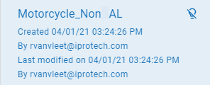
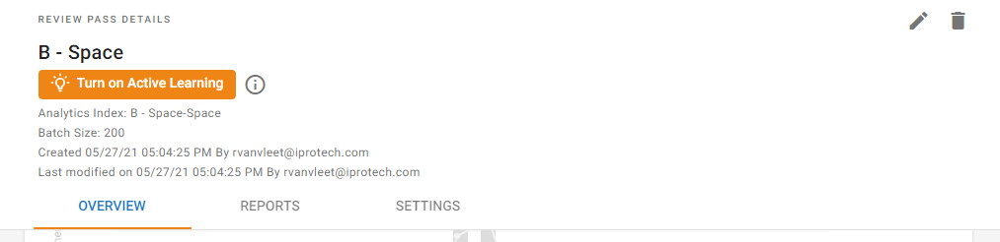
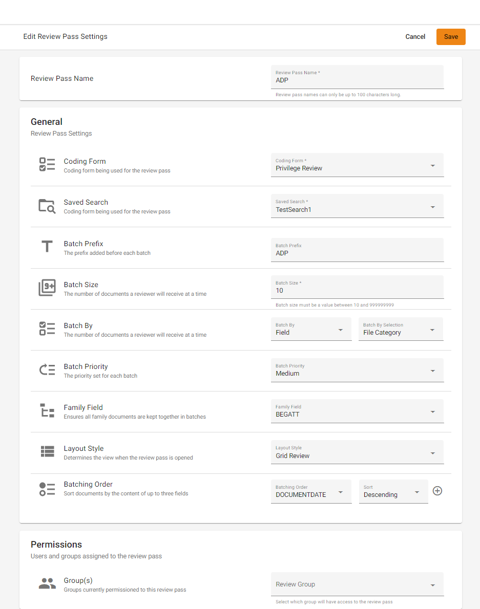
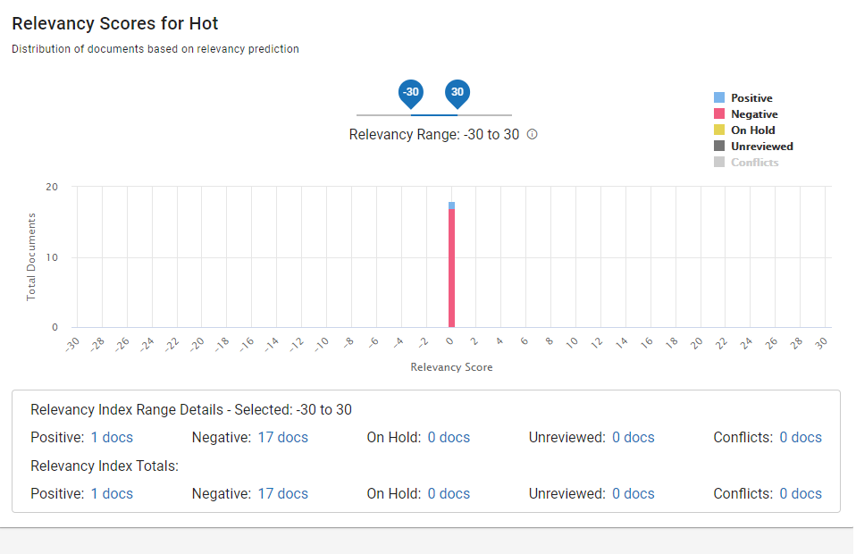
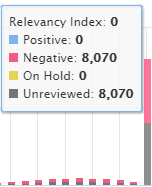
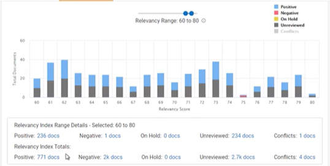
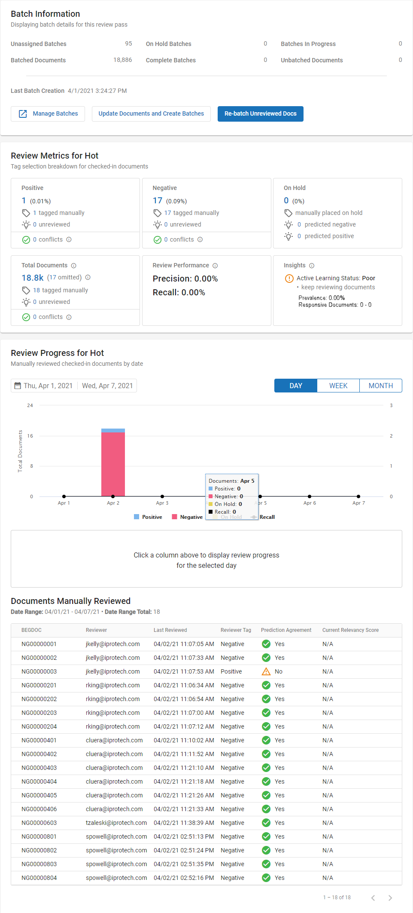
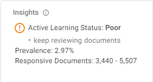

The Active Learning (AL) disabled review pass is the standard way to run a review pass, which does not require use of the AL feature. If you would rather create your review pass by using the AL feature, go to Create Review Passes and Batches and Work with Active Learning Enabled Review Passes.
|

|
Notes:
-
In addition, we recommend that you see Manage Review Passes for a general understanding of the Review Pass process.
-
disabled review passes still run “in the background”, but it is transparent to reviewers. At some point in the review, the setting could be enabled to start prioritizing predicted positive documents within the review pass, and that would change the document order for reviewers.
-
If you prefer to turn off the functionality running “in the background” on disabled review passes, the functionality can be turned off across the environment through SQL. For more information, please contact Support.
|
Set Up the Review Pass
-
Make sure that you have performed the steps in “Create an Disabled Review Pass” in Create Review Passes and Batches.
-
Open the respective case. In the left pane, click the Review Pass Management button . Click the disabled review pass you created in Create Review Passes and Batches.

The Review Pass Details screen appears.

-
In the top right corner of the Review Pass Details screen, click the edit icon . The Edit Review Pass Settings screen appears. This screen contains the settings that display in the Settings tab of the Review Pass Details screen.

-
Update Review Pass Name, General settings, and Permissions settings.
For details about the options you can edit on the Edit Review Pass Settings screen see the Settings table in Create Review Passes and Batches.
- Click . In the left pane, the disabled review pass listing displays with a icon in its top-right corner.
Settings Tab
On the Review Pass Details screen, you can view the values that you set by clicking the Settings tab. See the previous table for a description of these settings.

|
|
Note: If you want to change this review pass to enabled, click . Then go to Work with Active Learning Enabled Review Passes.
|
Define AL Disabled Review Pass Settings
The following tables describe the definitions shown on the Settings tab and the Overview tab.
Reports Tab

On the Reports tab is the Relevancy Scores bar graph, which shows the distribution of documents based on relevancy prediction. See the following example:

Hovering over a bar shows the Relevancy Index for that score:

When the Relevancy Range is set wide, say -30 to 30, then the Relevancy Index Range Details shows that the documents that fall into the range of being predicted as positive are the same or close to the entire set of review documents. The Relevancy Range can be adjusted as you desire. If you narrow the Relevancy Range, for example, to between 60 and 80, fewer documents will display within the Relevancy Range Details.

Clicking a link will trigger a Visual Search for that particular document set.
Overview Tab

For details about the options you can edit on the Edit Review Pass Settings screen see the Overview table in Create Review Passes and Batches.
In-app Information bubbles are available next to the Review Metrics for additional information.

Note that the Insights card now contains Prevalence and Responsive Documents values:
